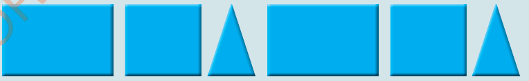

(a) Muundo wa asili

(b) Muundo wa kutengeneza
Kielelezo namba 1: Mifano ya miundo
Angalia/chunguza Kielelezo namba 1 na ueleze mpangilio wa kimantiki wa kila picha.
Unaweza pia kuunda muundo kwa kuchanganya maumbo tofauti kwa njia ya kimantiki kama inavyooneshwa kwenye Kielelezo namba 2. Unapaswa kufikiria kimantiki kuhusu mpangilio wa maumbo ili kutambua ni umbo gani linaanza na ni umbo gani linafuata. Pia, unapaswa kuwa na wazo la muundo wa mwisho unaotaka kuunda.

Kielelezo namba 2: Maumbo tofauti yaliyopangiliwa kimantiki kuwa muundo